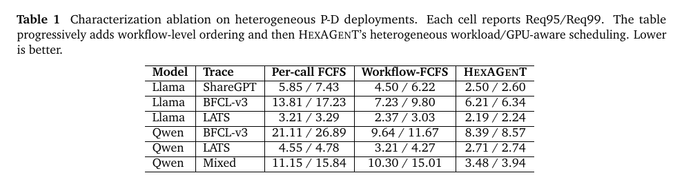
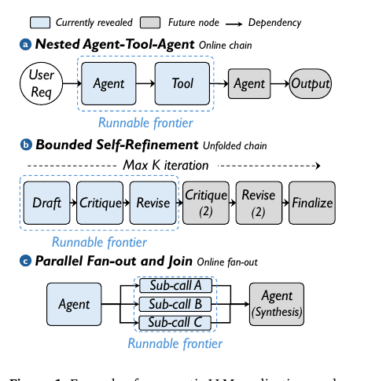
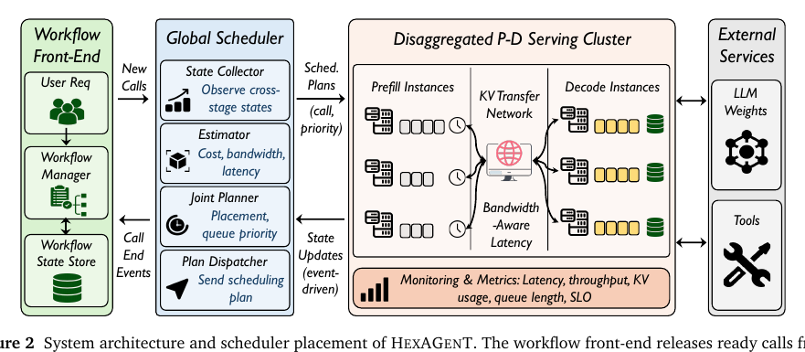
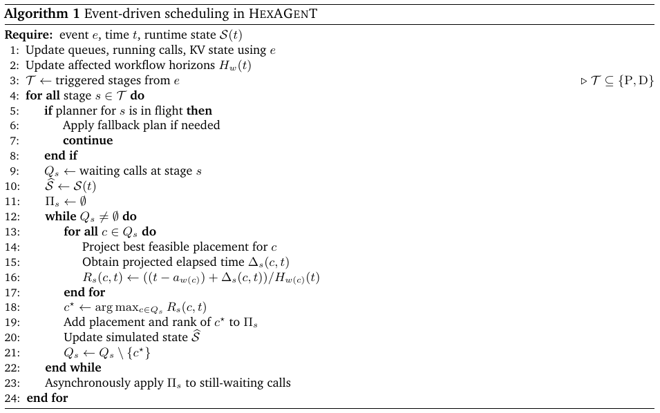
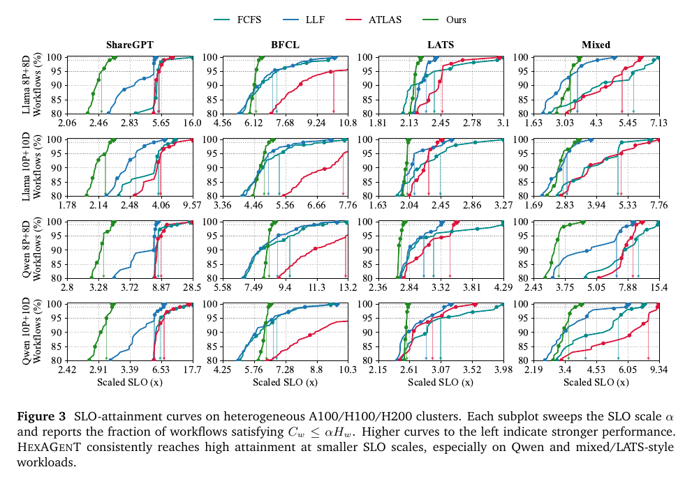
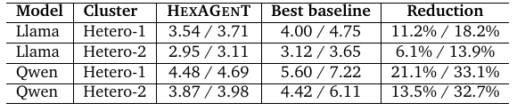
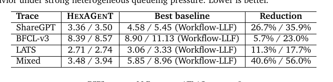
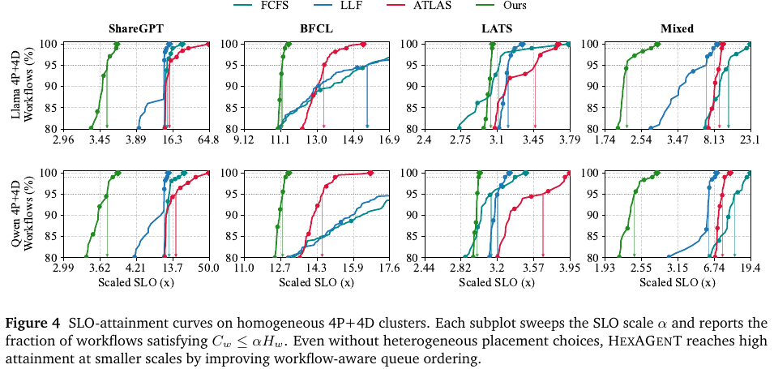
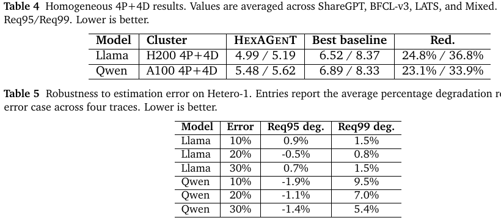
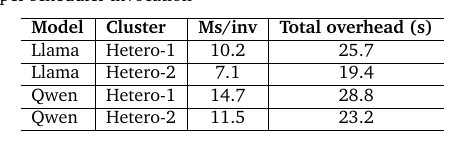

HEXAGENT：通过工作流感知与异构感知调度实现高效 Agentic LLM Serving
摘要。Agentic LLM 应用越来越多地把用户请求执行为多步骤工作流，包含规划、工具调用、分支、修订和综合。用户感知的是整个工作流的端到端延迟，而不是某一次 LLM 调用的延迟。本文研究如何在异构 prefill-decode 解耦 LLM 服务集群中调度在线 agentic 工作流，以高效满足工作流级延迟目标。难点在于工作流依赖在运行时逐步揭示，不同调用具有不同 prompt、输出和 KV-cache 需求，prefill 与 decode 阶段又在异构 GPU 上受到不同计算、内存和传输约束。HEXAGENT 将每个请求建模为在线揭示 DAG，维护工作流独立完成视界，以错过该视界的投影风险排序 ready calls，并联合选择 prefill placement、decode placement 和本地队列优先级。代表性 agentic workload 和 A100/H100/H200 异构集群实验显示，HEXAGENT 将 95% 与 99% 及时完成所需 SLO scale 平均降低 20.1% 与 33.0%，最大降低 45.0% 与 80.5%。
1 引言
LLM 正从孤立的单轮服务组件，转向 agentic workflow 中的执行单元：一个请求可能先规划，随后调用工具，修订中间结果，分叉成并行子任务，最后综合为最终回答。ReAct、LATS 和 BFCL 等工作说明，多步执行和工具调用已经成为实际 LLM 应用的核心。
这种转变改变了 serving 的基本单位。用户不单独感知某个 LLM call，而是感知整个 workflow 的完成时间。本文关注在 prefill-decode 解耦、且 GPU 代际异构的经济型 serving 基础设施上，如何让整个 workflow 在端到端延迟目标内完成。
该问题直接关系到 agentic AI 的性能和成本。prefill 更偏计算密集，decode 更受内存与 KV-cache 约束，因此 P-D disaggregation 能通过资源专门化提升利用率；异构集群又允许复用 A100、H100、H200 等不同 GPU。若调度得当，系统不必把所有请求都放在最新硬件上，也能满足 workflow-level SLO。
困难在于调度器必须同时处理在线不确定性、异构资源和工作流结构。只有源节点在请求到达时可见，后续调用在父节点完成或工具返回后才出现；同一 workflow 中的调用输入输出长度、KV 需求和 prefill/decode 代价差异明显；本地 call-level 目标还可能与 workflow 关键路径冲突。FCFS 或 queue-length balancing 可能减少单个 call 等待，却推迟整个 workflow 的关键路径。
2 预备知识与相关工作
现有 LLM serving 系统，如 ORCA、vLLM、SGLang、Sarathi-Serve、Llumnix 和 ServerlessLLM，主要围绕单个 inference request 优化 KV-cache、continuous batching 和吞吐。它们对传统 chatbot-style workload 有效，但默认请求之间相对独立，缺少以 workflow 作为公平和进度单位的调度目标。
Prefill-decode disaggregation 将 prompt processing 与 token generation 放到专门实例池中，提高硬件专用化，却也把一次调用变成多阶段调度问题：调度器必须决定 prompt 由哪个 prefill instance 处理、decode 由哪个 instance 继续，以及 call 何时进入各自队列。KV transfer 虽不一定是独立瓶颈，但会贡献不可忽略延迟并影响 decode ready 时间。
Parrot、Hermes、Autellix、Continuum 等 program-aware 系统把调度对象提升到 program 或 agent execution 层面；传统 job scheduling、DAG scheduling、deadline/slack-aware policies 也提供了重要启发。然而本文目标场景同时具备在线揭示 DAG、异构 P-D 资源、decode KV 容量约束与异步低开销运行要求，不能直接套用已有方法。
3 工作负载刻画
本文先通过小型 ablation 说明：服务 agentic workflow 时，既需要 end-to-end workflow awareness，也需要异构 workload/GPU-aware placement。实验使用 Llama3.1-70B 和 Qwen3-235B-A22B，在含 8 个 prefill 与 8 个 decode 实例的异构 P-D 集群上运行，其中实例由 A100、H100 和 H200 混合组成。工作负载包括 ShareGPT 对话链、BFCL-v3 function-calling workflow、LATS tree/search workflow 以及混合负载。

指标使用 scaled-SLO。对 workflow w，先估计其在同一集群上的独立执行视界 \(H_{w}\)。给定 scale factor α，若完成时间 \(C_{w}\) ≤ \(αH_{w}\)，则该 workflow 满足 SLO。Req95 和 Req99 分别是达到 95% 与 99% workflow SLO attainment 所需的最小 α。
方法 1：加入 workflow-level awareness。将 per-call FCFS 替换为 workflow-level FCFS 后，不再只按 call 揭示时间排序，而保留同一 workflow 的执行连续性。相较 per-call FCFS，Workflow-FCFS 平均将 Req95 降低 31.4%，Req99 降低 23.3%。在 BFCL 上尤其明显，例如 Qwen-BFCL 的 Req95 从 21.11 降至 9.64，Req99 从 26.89 降至 11.67。
洞见 1。Agentic workflow serving 必须优化端到端 workflow 进度，而不只是 per-call queue order。即便简单的 workflow-level FCFS，也能因保留 workflow 执行连续性而显著改善尾部 SLO scale。
方法 2：加入 heterogeneity awareness。仅有 workflow 级排序仍不够。不同调用的输入输出长度不同，有些更偏 prefill，有些带来更大的 decode/KV 压力；不同 GPU 实例上的 prefill/decode 服务延迟也不同。HEXAGENT 在知道哪个 workflow 更紧急后，还会根据每个 call 的工作量模式和实例服务时间选择合适的 prefill/decode pair。相较 Workflow-FCFS，HEXAGENT 在六个刻画案例中平均进一步降低 Req95 26.9%、Req99 42.6%。
4 系统概览
HEXAGENT 的关键思想是把 agentic request 表示为在线揭示 workflow，并在 P-D disaggregated runtime 中服务。它把每个 agentic workflow 抽象为 DAG G=(V,E)，节点是 LLM calls，边表示执行依赖。DAG 不是一次性已知：workflow 到达时只有 source calls 可见，child node 只有在所有 parent 完成后才可调度。因此系统维护 runnable frontier，并反复对当前已揭示的 ready calls 做决策。

系统由 workflow front-end、global scheduler、P-D serving cluster 和 external services 组成。front-end 接收请求、跟踪 workflow state 并维护在线 DAG 揭示过程；global scheduler 观察系统状态并决定等待 call 的实例分配和队列优先级；P-D cluster 包含异构 prefill pool 与 decode pool；external services 包括可由 workflow 调用的 LLM 和工具。

调度器内部包括 State Collector、Estimator、Joint Planner 和 Plan Dispatcher。State Collector 汇总 prefill/decode 队列、运行中 call、decode KV 用量、带宽相关传输状态和 workflow progress；Estimator 将状态与每个 call 的输入输出长度转换为 runtime estimates；Joint Planner 联合决定 prefill/decode pair 和本地队列优先级；Plan Dispatcher 将决策发给对应 worker。队列顺序不仅是实例选择的附属项，它会显著影响 workflow 尾延迟。
5 调度框架
HEXAGENT 将服务过程建模为在线 workflow scheduling over heterogeneous resources。对于每个 workflow，系统维护当前已揭示子图和独立完成视界 \(H_{w}\)(t)。Ready calls 根据 projected scaled-SLO pressure 排序：如果一个 call 在候选实例上运行后会让 workflow 更接近或超过当前视界，就获得更高优先级。
调度是 event-driven 的。workflow arrival、prefill completion、transfer completion 和 decode completion 都会改变运行状态并触发调度。新 workflow 到达会揭示 source calls；prefill 完成释放 prefill slot 并启动 KV transfer；transfer 完成使 call 具备 decode admission 条件；decode 完成释放 decode capacity，并可能揭示新的 child calls。

Prefill scheduler 对每个等待 call 评估候选 prefill/decode 组合，预测 elapsed time 与完成压力，并用 adaptive greedy 策略反复选择最紧急且可行的 call。为了避免昂贵 KV movement，调度器会惩罚跨硬件类型且传输代价过高的 prefill-decode pair，除非服务时间收益足以抵消。
Decode scheduler 处理已经完成 transfer、等待 decode admission 的 calls。它使用同样的 projected-ratio score 排序，但还必须检查 decode KV capacity。若 call 在 prefill 调度时被锁定到某个 planned decode instance，则只能在该实例内部重排，不能迁移到其他 decode instance；未锁定 call 可在任何可行实例上放置。
6 实现
实现中，HEXAGENT 集成到一个 SGLang v0.5 风格的 P-D serving stack。系统对 prefill、decode、KV transfer 和运行中 call 的状态进行轻量级采样，并通过离线 profile 与估计模型预测 prefill time、decode time、KV-transfer latency 和 decode memory demand。调度器异步运行：当新的调度计划尚未完成时，正在服务的 call 不被阻塞；若计划过期或状态变化过快，系统使用 fallback policy 保证进度。
该实现刻意避免 monolithic full-workflow optimization，因为 agentic workflow 是在线揭示的，未来节点并不完全已知，并且服务路径不能长时间等待求解。HEXAGENT 的设计重点是把 workflow-level urgency 与异构 placement 结合成可在线应用的低开销策略。
7 实验评估
实验回答四个问题：Q1，HEXAGENT 在异构集群上能否改善端到端性能；Q2，在同构 4P+4D 集群上收益是否仍存在；Q3，服务时间估计误差下是否稳健；Q4，调度开销是否可接受。基线包括 per-call FCFS、workflow-aware FCFS/LLF、ATLAS/PLAS 风格 program-aware 策略及其他调度变体。


在异构设置下，HEXAGENT 在两个模型族和两个集群规模上都持续优于最强 baseline。即便在最弱平均案例 Llama Hetero-2 中，Req95 仍降低 6.1%，Req99 降低 13.9%；Qwen 上收益更大，说明异构部署在大模型和混合工作流中带来更强 placement 问题。


表 3 展示 Qwen Hetero-1 的细分结果。Mixed 上收益最大，Req99 从 Workflow-LLF 的 8.96 降至 3.94，降低 56.0%；ShareGPT 和 BFCL-v3 也分别显著下降。原因是 Mixed workload 结合链式、function-calling 和 tree-search，给 P/D 阶段制造了非均匀排队压力。

同构结果说明 HEXAGENT 不只依赖硬件异构。即使所有实例在同一模型配置上运行，workflow-aware scheduling 仍能通过优先处理最接近 SLO 目标的 workflow、避免糟糕本地队列顺序来降低 tail SLO scale。
鲁棒性实验向调度器可见的 prefill/decode 估计注入 10%、20%、30% 乘性误差，而实际服务时间不变。结果显示，中等预测误差下 HEXAGENT 仍稳定：Llama 的平均 Req99 degradation 在 30% 误差下仍不超过 1.5%；Qwen 对 Req99 更敏感，但退化有界且非单调，因为调度信号来自 workflow-level normalized pressure，而不是单个 noisy call duration。

开销方面，HEXAGENT 每次调度平均只需毫秒级时间：Llama Hetero-1 为 10.2 ms，Llama Hetero-2 为 7.1 ms，Qwen Hetero-1 为 14.7 ms，Qwen Hetero-2 为 11.5 ms，跨 trace 最差平均值为 23.7 ms。异步计划应用保证该成本不会直接阻塞已经运行中的服务。
8 结论
HEXAGENT 是一个 workflow- and heterogeneity-aware scheduler，用于在 P-D disaggregated paradigm 下服务 agentic LLM 请求。它为每个部分揭示的 workflow 维护在线 planning horizon，并联合规划 prefill 与 decode assignment，同时考虑异构服务延迟。实验表明，HEXAGENT 在异构环境中优于 program-aware baseline，并且收益可迁移到同构 H200 集群。这说明随着 LLM 应用从孤立请求演化为结构化多步骤 agentic 系统，workflow-level objectives 应成为一等调度目标。
参考文献
References [1] Amey Agrawal, Nitin Kedia, Ashish Panwar, Jayashree Mohan, Nipun Kwatra, Bhargav S. Gulavani, Alexey Tumanov, and Ramachandran Ramjee. Taming throughput-latency trade-off in LLM inference with Sarathi-Serve. In 18th USENIX Symposium on Operating Systems Design and Implementation (OSDI 24), Santa Clara, CA, July 2024. USENIX Association. ISBN 978-1-939133-40-3. URL https://www.usenix.org/conference/osdi24/presentatio n/agrawal. [2] Yossi Azar, Andrei Z. Broder, Anna R. Karlin, and Eli Upfal. Balanced allocations. In Proceedings of the Twenty-Sixth Annual ACM Symposium on Theory of Computing, pages 593–602, New York, NY, USA, 1994. Association for Computing Machinery. doi: 10.1145/195058.195412. [3] Maciej Besta, Nils Blach, Ales Kubicek, Robert Gerstenberger, Michal Podstawski, Lukas Gianinazzi, Joanna Gajda, Tomasz Lehmann, Hubert Niewiadomski, Piotr Nyczyk, and Torsten Hoefler. Graph of thoughts: Solving elaborate problems with large language models. In Proceedings of the AAAI Conference on Artificial Intelligence, volume 38. AAAI Press, 2024. [4] Shiyi Cao, Shu Liu, Tyler Griggs, Peter Schafhalter, Xiaoxuan Liu, Ying Sheng, Joseph E. Gonzalez, Matei Zaharia, and Ion Stoica. MoE-Lightning: High-throughput MoE inference on memory-constrained GPUs. In Proceedings of the 16 30th ACM International Conference on Architectural Support for Programming Languages and Operating Systems, Volume 1, pages 715–730. ACM, 2025. doi: 10.1145/3669940.3707267. URL https://doi.org/10.1145/366994 0.3707267. [5] Wei-Lin Chiang, Zhuohan Li, Zi Lin, Ying Sheng, Zhanghao Wu, Hao Zhang, Lianmin Zheng, Siyuan Zhuang, Yonghao Zhuang, Joseph E. Gonzalez, Ion Stoica, and Eric P. Xing. Vicuna: An open-source chatbot impressing GPT-4 with 90%* ChatGPT quality. LMSYS Blog, March 2023. URL https://lmsys.org/blog/2023-03-30-vicuna/. [6] Robert I. Davis, Ken W. Tindell, and Alan Burns. Scheduling slack time in fixed priority pre-emptive systems. In Proceedings of the 14th IEEE Real-Time Systems Symposium, pages 222–231, Washington, DC, USA, 1993. IEEE Computer Society. doi: 10.1109/REAL.1993.393505. [7] Yao Fu, Leyang Xue, Yeqi Huang, Andrei-Octavian Brabete, Dmitrii Ustiugov, Yuvraj Patel, and Luo Mai. ServerlessLLM: Low-latency serverless inference for large language models. In 18th USENIX Symposium on Operating Systems Design and Implementation (OSDI 24), pages 135–153, Santa Clara, CA, July 2024. USENIX Association. ISBN 978-1-939133-40-3. URL https://www.usenix.org/conference/osdi24/presentation/fu. [8] Yichao Fu, Siqi Zhu, Runlong Su, Aurick Qiao, Ion Stoica, and Hao Zhang. Efficient LLM scheduling by learning to rank, 2024. [9] Guoliang He, Youhe Jiang, Wencong Xiao, Jiang Kaihua, Shuguang Wang, Jun Wang, Du Zixian, Zhuo Jiang, Xinlei Zhang, Binhang Yuan, et al. Efficient pre-training of llms via topology-aware communication alignment on more than 9600 gpus. Advances in Neural Information Processing Systems, 38:147100–147126, 2026. [10] Wenhao He, Youhe Jiang, Penghao Zhao, Quanqing Xu, Eiko Yoneki, Bin Cui, and Fangcheng Fu. Efficient multi-round llm inference over disaggregated serving. arXiv preprint arXiv:2602.14516, 2026. [11] Youhe Jiang, Fangcheng Fu, Xupeng Miao, Xiaonan Nie, and Bin Cui. Osdp: Optimal sharded data parallel for distributed deep learning. arXiv preprint arXiv:2209.13258, 2022. [12] Youhe Jiang, Ran Yan, Xiaozhe Yao, Yang Zhou, Beidi Chen, and Binhang Yuan. Hexgen: Generative inference of large language model over heterogeneous environment. arXiv preprint arXiv:2311.11514, 2023. [13] Youhe Jiang, Fangcheng Fu, Xiaozhe Yao, Guoliang He, Xupeng Miao, Ana Klimovic, Bin Cui, Binhang Yuan, and Eiko Yoneki. Demystifying cost-efficiency in llm serving over heterogeneous gpus. arXiv preprint arXiv:2502.00722, 2025. [14] Youhe Jiang, Fangcheng Fu, Xiaozhe Yao, Taiyi Wang, Bin Cui, Ana Klimovic, and Eiko Yoneki. Thunderserve: High-performance and cost-efficient llm serving in cloud environments. Proceedings of Machine Learning and Systems, 7, 2025. [15] Youhe Jiang, Fangcheng Fu, Wanru Zhao, Stephan Rabanser, Jintao Zhang, Nicholas D Lane, and Binhang Yuan. Cascadia: An efficient cascade serving system for large language models. arXiv preprint arXiv:2506.04203, 2025. [16] Youhe Jiang, Ran Yan, and Binhang Yuan. Hexgen-2: Disaggregated generative inference of llms in heterogeneous environment. arXiv preprint arXiv:2502.07903, 2025. [17] Youhe Jiang, Fangcheng Fu, Taiyi Wang, Guoliang He, and Eiko Yoneki. Oserve: Accelerating llm serving via spatial-temporal workload orchestration. arXiv preprint arXiv:2602.12151, 2026. [18] Youhe Jiang, Fangcheng Fu, and Eiko Yoneki. Boute: Cost-efficient llm serving with heterogeneous llms and gpus via multi-objective bayesian optimization. arXiv preprint arXiv:2602.10729, 2026. [19] Youhe Jiang, Ran Yan, You Peng, Wenshuang Li, Taiyi Wang, Fangcheng Fu, and Binhang Yuan. Autopoiesis: A self-evolving system paradigm for llm serving under runtime dynamics. arXiv preprint arXiv:2604.07144, 2026. [20] Yibo Jin, Tao Wang, Huimin Lin, Mingyang Song, Peiyang Li, Yipeng Ma, Yicheng Shan, Zhengfan Yuan, Cailong Li, Yajing Sun, Tiandeng Wu, Xing Chu, Ruizhi Huan, Li Ma, Xiao You, Wenting Zhou, Yunpeng Ye, Wen Liu, Xiangkun Xu, Yongsheng Zhang, Tiantian Dong, Jiawei Zhu, Zhe Wang, Xijian Ju, Jianxun Song, Haoliang Cheng, Xiaojing Li, Jiandong Ding, Hefei Guo, and Zhengyong Zhang. P/D-Serve: Serving disaggregated large language model at scale, 2024. [21] Woosuk Kwon, Zhuohan Li, Siyuan Zhuang, Ying Sheng, Lianmin Zheng, Cody Hao Yu, Joseph E. Gonzalez, Hao Zhang, and Ion Stoica. Efficient memory management for large language model serving with PagedAttention. In Proceedings of the ACM SIGOPS 29th Symposium on Operating Systems Principles, pages 611–626, New York, NY, USA, 2023. Association for Computing Machinery. doi: 10.1145/3600006.3613165. 17 [22] Hanchen Li, Qiuyang Mang, Runyuan He, Qizheng Zhang, Huanzhi Mao, Xiaokun Chen, Alvin Cheung, Joseph E. Gonzalez, and Ion Stoica. Continuum: Efficient and robust multi-turn LLM agent scheduling with KV cache time-to-live, 2025. [23] Zhuohan Li, Lianmin Zheng, Yinmin Zhong, Vincent Liu, Ying Sheng, Xin Jin, Yanping Huang, Zhifeng Chen, Hao Zhang, Joseph E. Gonzalez, and Ion Stoica. AlpaServe: Statistical multiplexing with model parallelism for deep learning serving. In 17th USENIX Symposium on Operating Systems Design and Implementation (OSDI 23), pages 663–679, Boston, MA, July 2023. USENIX Association. ISBN 978-1-939133-34-2. URL https://www.usenix.org/c onference/osdi23/presentation/li-zhouhan. [24] Chaofan Lin, Zhenhua Han, Chengruidong Zhang, Yuqing Yang, Fan Yang, Chen Chen, and Lili Qiu. Parrot: Efficient serving of LLM-based applications with semantic variable. In 18th USENIX Symposium on Operating Systems Design and Implementation (OSDI 24), pages 929–945, Santa Clara, CA, July 2024. USENIX Association. ISBN 978-1-939133-40-3. URL https://www.usenix.org/conference/osdi24/presentation/lin-chaofan. [25] Yifei Liu, Zuo Gan, Zhenghao Gan, Weiye Wang, Chen Chen, Yizhou Shan, Xusheng Chen, Zhenhua Han, Yifei Zhu, Shixuan Sun, and Minyi Guo. Hermes: Efficient serving of LLM applications with probabilistic demand modeling. ACM Transactions on Architecture and Code Optimization, 2026. doi: 10.1145/3803390. [26] Michael Luo, Xiaoxiang Shi, Colin Cai, Tianjun Zhang, Justin Wong, Yichuan Wang, Chi Wang, Yanping Huang, Zhifeng Chen, Joseph E. Gonzalez, and Ion Stoica. Autellix: An efficient serving engine for LLM agents as general programs, 2025. [27] Aman Madaan, Niket Tandon, Prakhar Gupta, Skyler Hallinan, Luyu Gao, Sarah Wiegreffe, Uri Alon, Nouha Dziri, Shrimai Prabhumoye, Yiming Yang, Shashank Gupta, Bodhisattwa Prasad Majumder, Katherine Hermann, Sean Welleck, Amir Yazdanbakhsh, and Peter Clark. Self-refine: Iterative refinement with self-feedback. In Advances in Neural Information Processing Systems, volume 36. Curran Associates, Inc., 2023. [28] Ziming Mao, Tian Xia, Zhanghao Wu, Wei-Lin Chiang, Tyler Griggs, Romil Bhardwaj, Zongheng Yang, Scott Shenker, and Ion Stoica. Skyserve: Serving ai models across regions and clouds with spot instances. In Proceedings of the Twentieth European Conference on Computer Systems, pages 159–175, 2025. [29] McKinsey & Company. The state of AI in 2025. McKinsey Global Survey, 2025. URL https://www.mckinsey.com/c apabilities/quantumblack/our-insights/the-state-of-ai. [30] Xupeng Miao, Yujie Wang, Youhe Jiang, Chunan Shi, Xiaonan Nie, Hailin Zhang, and Bin Cui. Galvatron: Efficient transformer training over multiple gpus using automatic parallelism. arXiv preprint arXiv:2211.13878, 2022. [31] Pratyush Patel, Esha Choukse, Chaojie Zhang, Aashaka Shah, Íñigo Goiri, Saeed Maleki, and Ricardo Bianchini. Splitwise: Efficient generative llm inference using phase splitting. In 2024 ACM/IEEE 51st Annual International Symposium on Computer Architecture (ISCA), pages 118–132. IEEE, 2024. [32] Shishir G. Patil, Huanzhi Mao, Fanjia Yan, Charlie Cheng-Jie Ji, Vishnu Suresh, Ion Stoica, and Joseph E. Gonzalez. The berkeley function calling leaderboard (BFCL): From tool use to agentic evaluation of large language models. In Forty-second International Conference on Machine Learning, 2025. URL https://icml.cc/virtual/2025/poste r/46593. [33] Archit Patke, Dhemath Reddy, Saurabh Jha, Haoran Qiu, Christian Pinto, Chandra Narayanaswami, Zbigniew T. Kalbarczyk, and Ravishankar K. Iyer. Queue management for SLO-oriented large language model serving. In Proceedings of the 2024 ACM Symposium on Cloud Computing, pages 18–35, New York, NY, USA, 2024. Association for Computing Machinery. doi: 10.1145/3698038.3698523. [34] You Peng, Youhe Jiang, Wenqi Jiang, Chen Wang, and Binhang Yuan. Hexgen-flow: Optimizing llm inference request scheduling for agentic text-to-sql. arXiv preprint arXiv:2505.05286, 2025. [35] Haoran Qiu, Weichao Mao, Archit Patke, Shengkun Cui, Saurabh Jha, Chen Wang, Hubertus Franke, Zbigniew T. Kalbarczyk, Tamer Basar, and Ravishankar K. Iyer. Efficient interactive llm serving with proxy model-based sequence length prediction. In Proceedings of the 5th International Workshop on Cloud Intelligence / AIOps at ASPLOS 2024 (AIOps 2024), pages 1–7, San Diego, CA, USA, 2024. Association for Computing Machinery. [36] Haoran Qiu, Weichao Mao, Archit Patke, Shengkun Cui, Saurabh Jha, Chen Wang, Hubertus Franke, Zbigniew T. Kalbarczyk, Tamer Basa¸r, and Ravishankar K. Iyer. Efficient interactive LLM serving with proxy model-based sequence length prediction. In Proceedings of the 5th International Workshop on Cloud Intelligence / AIOps at ASPLOS 2024, New York, NY, USA, 2024. Association for Computing Machinery. URL https://haoran-qiu.com/publication/a splos-2024/. 18 [37] Timo Schick, Jane Dwivedi-Yu, Roberto Dessì, Roberta Raileanu, Maria Lomeli, Eric Hambro, Luke Zettlemoyer, Nicola Cancedda, and Thomas Scialom. Toolformer: Language models can teach themselves to use tools. In Advances in Neural Information Processing Systems, volume 36. Curran Associates, Inc., 2023. [38] Linus Schrage. A proof of the optimality of the shortest remaining processing time discipline. Operations Research, 16(3):687–690, 1968. [39] Rana Shahout, Eran Malach, Chunwei Liu, Weifan Jiang, Minlan Yu, and Michael Mitzenmacher. Don’t stop me now: Embedding based scheduling for LLMs, 2024. [40] John A. Stankovic, Marco Spuri, Krithi Ramamritham, and Giorgio C. Buttazzo. Scheduling in Real-Time Systems. Springer, Boston, MA, USA, 1998. [41] Biao Sun, Ziming Huang, Hanyu Zhao, Wencong Xiao, Xinyi Zhang, Yong Li, and Wei Lin. Llumnix: Dynamic scheduling for large language model serving. In 18th USENIX Symposium on Operating Systems Design and Implementation (OSDI 24), pages 173–191, Santa Clara, CA, July 2024. USENIX Association. ISBN 978-1-939133- 40-3. URL https://www.usenix.org/conference/osdi24/presentation/sun-biao. [42] Chris Tong, Youhe Jiang, Gufeng Chen, Tianyi Zhao, Sibian Lu, Wenjie Qu, Eric Yang, Lynn Ai, and Binhang Yuan. Parallax: Efficient llm inference service over decentralized environment. arXiv preprint arXiv:2509.26182, 2025. [43] Yujie Wang, Youhe Jiang, Xupeng Miao, Fangcheng Fu, Shenhan Zhu, Xiaonan Nie, Yaofeng Tu, and Bin Cui. Improving automatic parallel training via balanced memory workload optimization. IEEE Transactions on Knowledge and Data Engineering, 36(8):3906–3920, 2024. [44] Samuel Williams, Andrew Waterman, and David A. Patterson. Roofline: An insightful visual performance model for multicore architectures. Communications of the ACM, 52(4):65–76, 2009. doi: 10.1145/1498765.1498785. URL https://doi.org/10.1145/1498765.1498785. [45] Bingyang Wu, Yinmin Zhong, Zili Zhang, Gang Huang, Xuanzhe Liu, and Xin Jin. Fast distributed inference serving for large language models, 2023. [46] Ran Yan, Youhe Jiang, Zhuoming Chen, Haohui Mai, Beidi Chen, and Binhang Yuan. Fsa: An alternative efficient implementation of native sparse attention kernel. arXiv preprint arXiv:2508.18224, 2025. [47] Ran Yan, Youhe Jiang, Tianyuan Wu, Jiaxuan Gao, Zhiyu Mei, Wei Fu, Haohui Mai, Wei Wang, Yi Wu, and Binhang Yuan. Areal-hex: Accommodating asynchronous rl training over heterogeneous gpus. arXiv preprint arXiv:2511.00796, 2025. [48] Zhilin Yang, Peng Qi, Saizheng Zhang, Yoshua Bengio, William Cohen, Ruslan Salakhutdinov, and Christopher D. Manning. HotpotQA: A dataset for diverse, explainable multi-hop question answering. In Proceedings of the 2018 Conference on Empirical Methods in Natural Language Processing, pages 2369–2380. Association for Computational Linguistics, 2018. doi: 10.18653/v1/D18-1259. URL https://aclanthology.org/D18-1259/. [49] Shunyu Yao, Dian Yu, Jeffrey Zhao, Izhak Shafran, Thomas L. Griffiths, Yuan Cao, and Karthik Narasimhan. Tree of thoughts: Deliberate problem solving with large language models. In Advances in Neural Information Processing Systems, volume 36. Curran Associates, Inc., 2023. [50] Shunyu Yao, Jeffrey Zhao, Dian Yu, Nan Du, Izhak Shafran, Karthik R. Narasimhan, and Yuan Cao. ReAct: Synergizing reasoning and acting in language models. In The Eleventh International Conference on Learning Representations, 2023. URL https://openreview.net/forum?id=WE_vluYUL-X. [51] Gyeong-In Yu, Joo Seong Jeong, Geon-Woo Kim, Soojeong Kim, and Byung-Gon Chun. Orca: A distributed serving system for transformer-based generative models. In 16th USENIX Symposium on Operating Systems Design and Implementation (OSDI 22), pages 521–538, Carlsbad, CA, July 2022. USENIX Association. ISBN 978-1-939133-28-1. URL https://www.usenix.org/conference/osdi22/presentation/yu. [52] Li Zhang, Youhe Jiang, Guoliang He, Xin Chen, Han Lv, Qian Yao, Fangcheng Fu, and Kai Chen. Efficient mixed- precision large language model inference with turbomind. arXiv preprint arXiv:2508.15601, 2025. [53] Yilong Zhao, Shuo Yang, Kan Zhu, Lianmin Zheng, Baris Kasikci, Yang Zhou, Jiarong Xing, and Ion Stoica. Blendserve: Optimizing offline inference for auto-regressive large models with resource-aware batching, 2024. [54] Lianmin Zheng, Liangsheng Yin, Zhiqiang Xie, Chuyue Sun, Jeff Huang, Cody Hao Yu, Shiyi Cao, Christos Kozyrakis, Ion Stoica, Joseph E. Gonzalez, Clark W. Barrett, and Ying Sheng. SGLang: Efficient execution of structured language model programs. In Advances in Neural Information Processing Systems, volume 37, Red Hook, NY, USA, 2024. 19 Curran Associates, Inc. URL https://papers.nips.cc/paper_files/paper/2024/hash/724be4472168f31ba1c9a c630f15dec8-Abstract-Conference.html. [55] Yinmin Zhong, Shengyu Liu, Junda Chen, Jianbo Hu, Yibo Zhu, Xuanzhe Liu, Xin Jin, and Hao Zhang. Distserve: Dis- aggregating prefill and decoding for goodput-optimized large language model serving. In 18th USENIX Symposium on Operating Systems Design and Implementation (OSDI 24), pages 193–210, Santa Clara, CA, July 2024. USENIX Association. ISBN 978-1-939133-40-3. URL https://www.usenix.org/conference/osdi24/presentation/zhon g-yinmin. [56] Andy Zhou, Kai Yan, Michal Shlapentokh-Rothman, Haohan Wang, and Yu-Xiong Wang. Language agent tree search unifies reasoning, acting, and planning in language models. In Proceedings of the 41st International Conference on Machine Learning, volume 235 of Proceedings of Machine Learning Research, pages 62138–62160. PMLR, 2024. URL https://proceedings.mlr.press/v235/zhou24r.html. 20